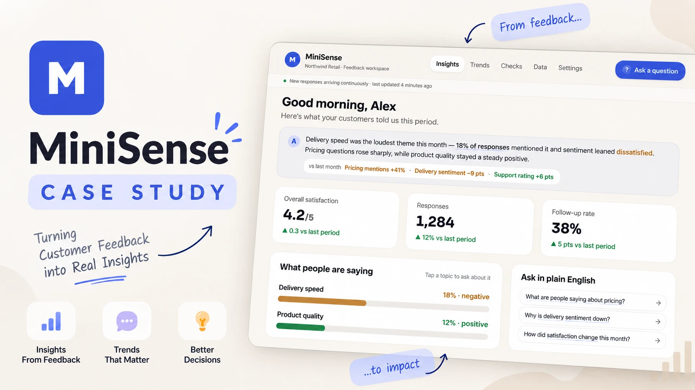
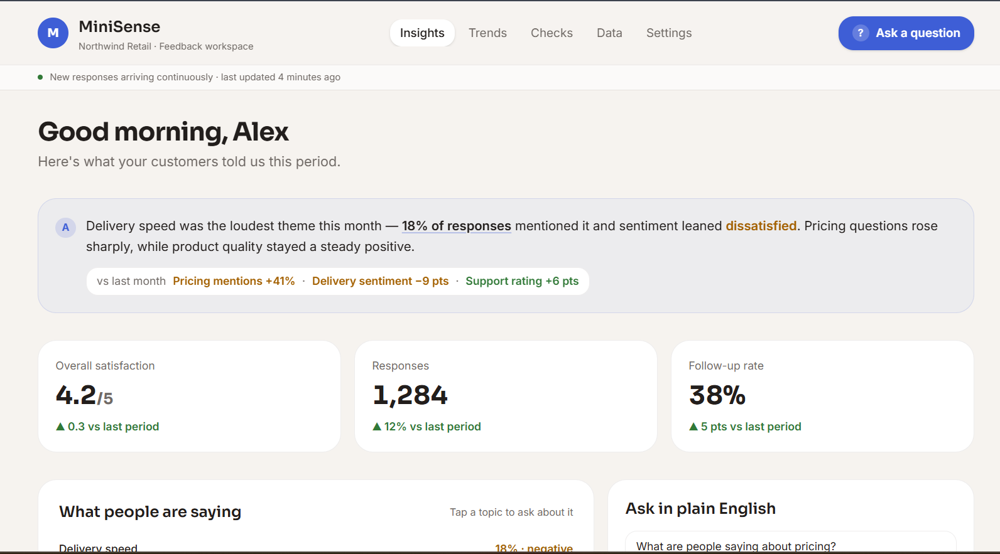

Product Requirements Document · Survey Insights Agent
Every month, a business collects hundreds of survey responses. Understanding what they actually say means someone scrolling a spreadsheet, hoping to notice a pattern. MiniSense's job is narrow: let anyone ask a plain-English question and get back an answer backed by exact numbers and real quotes, not a chart they have to interpret themselves.

Why It Needs to Exist
It's "produces an answer a non-technical person would act on, and could defend if challenged." Real problems — a wait-time complaint quietly doubling, a new issue getting flagged repeatedly — sit unnoticed until they surface somewhere worse: a bad review, a churned customer, a failed audit.

Who It's For
Primary
Checks survey results weekly. Needs a fast, trustworthy answer to "what should I fix this week," no spreadsheets, no BI training.
Secondary
Asks ad hoc, high-level questions before a leadership conversation. Wants a short, quotable answer with real numbers they can defend.
Future
Works at an omniXM enterprise customer, wants MiniSense output in their own reporting: structured data with citations, not a chat transcript.
Jobs to be done
What "Solved" Looks Like
Not a single chatbot — two layers built on the same underlying data, so a number never quietly differs between the auto-generated summary, the dashboard, and a chat answer.
Layer 1
Without being asked anything, the system surfaces the handful of metrics and issues a decision-maker actually needs this week: an executive summary and a few KPI cards, not a wall of fifty numbers.
Layer 2
Ask "what are our top 3 complaints this month and how do they compare to last month," get back a short answer, the exact numbers in a small table, and real comments that support it — each clickable to the source record.
If the data is too thin to answer confidently, or a question doesn't make sense, MiniSense says so. It never guesses just to have something to say.
How It Works
Data enters through upload or a live pull; fields are classified automatically; a question is answered through two paths that meet at generation: computed numbers, and topic-matched or semantically retrieved context (diversified with MMR so quotes aren't near-duplicates). A verification agent checks the draft before anything is shown.
If either check fails — a number doesn't match the calculation, or a quote isn't copied exactly — the answer is redone, not patched.
Clarifying Questions
Not just how it's worded — each one is stated with a plain example so the stakes are clear to the business side, not only to engineers.
A security boundary, not a preference — has to be right before launch. An agency managing five clients: could a staff member accidentally pull up the wrong client's numbers?
Get this wrong and a comparison becomes misleading without anyone noticing. Asked on June 3rd: does "this month" mean 3 days of June, or all of May?
Directly decides the ingestion design. A response submitted this morning: does it need to show by lunchtime, or is next-day fine?
The line between "ship and iterate" and "must be provably correct." Only 3 responses this week: is a caveated estimate okay, or should the system decline to answer?
Decides whether text needs cleaning before reaching any outside AI service. A comment reads "call me back at 555-1234" — should that number ever leave the business's own systems?
The single biggest input to the model-cost decision. 100 questions a day at 10 cents each is a very different budget than 10,000 a day.
Assumptions Until Answered
Goals & Non-Goals
Functional Requirements
Non-Functional Requirements
| Dimension | Bar |
|---|---|
| Numeric accuracy | 100% |
| Answer latency | Target <8s, hard ceiling 20s before a partial-state fallback |
| Data freshness | Continuous ingestion, minutes to a couple of hours |
| Data retention | Full history by default, no arbitrary rolling window |
| Cost per question | 5–15¢ |
| Privacy & isolation | Strict per-business isolation; PII scrubbed before any outside AI service |
| Availability | 99.5% |
The Core Technical Decision
"Wait time was too long," "took forever," and "line out the door" all mean the same thing, worded differently. A system needs a way to group these to answer "what are our top complaints" at all.
Fast, cheap, fully predictable. Shortcoming: a comment about something nobody made a folder for has nowhere to go — missed or miscategorised until a person manually adds one.
Handles new topics without being told about them first. Plain similarity search alone tends to return near-duplicates; MiniSense applies MMR on top, favouring comments that are relevant and different from each other.
Recommendation: use both. Sort into known topics for speed on expected questions; anything that doesn't confidently match falls through to smart search automatically. Nothing depends on a human remembering to update a topic list. The trade-off accepted knowingly: two systems instead of one, worth it because the two options fail in opposite ways.
Technical Architecture
The numeric side of the product is ordinary code, not a model. The model is only asked to do the two things a model is actually good at: writing a clear explanation, and selecting which retrieved evidence matters.
Sized for an initial user base in the tens of concurrent users, consistent with an early rollout — revisited only against real production volume and cost data, not an upfront guess.
Success Metrics
| Metric | Target |
|---|---|
| Numeric accuracy | 100% on a standing test set |
| Narrative quality, human-rated | ≥90% acceptable |
| Weekly adoption | 1+ question / licensed user / week |
| Trust signal | Healthy "viewed evidence" to "flagged wrong" ratio |
| Cost per question | 5–15¢ |